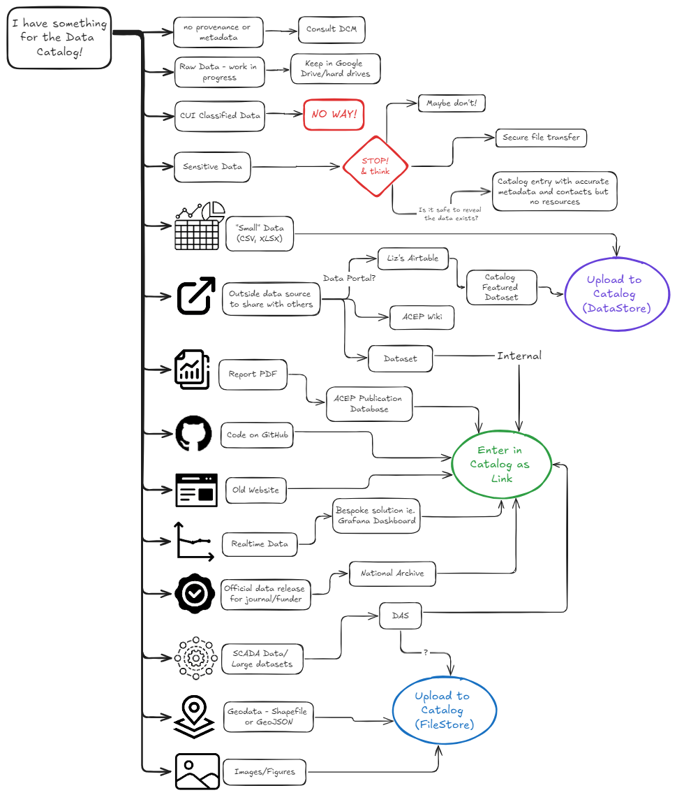

For Developers
Documentation of the development of the ACEP Data Catalog.
GitHub repository for the main Data Catalog site: https://github.com/UAF-RCS/acepportal-ckan
For more information and guides, visit the official CKAN Documentation
Data Sources Overview

Developing the Data Catalog
The ACEP Data Catalog is run on a VM hosted by RCS. Extensions can be updated by pushing to the acepportal-ckan GitHub repository. After pushing, changes take ~30 min to update on the main site.
Basic Docker Commands
List all running containers:
docker ps -a
There are 5 containers that run the data catalog
acep-ckan-contacep-db-contacep-redis-contacep-solr-contacep-datapusher-cont
Spin up Application
docker compose up
This will turn the terminal into an output stream for the docker containers.
TIP: I recommend keeping two terminals open: one for the output stream so you can see errors, and another to run other commands in
Rebuild and spin up containers:
docker compose up -d --build
Run this command after installing a new extension and adding it to the .env file.
Go into container:
docker exec -it [container_name] /bin/bash
Or if bash is not installed in the container:
docker exec -it [container_name] /bin/sh
Or if in a bash terminal:
docker exec -it [container_name] bash
Restart a container:
docker restart [container_name]
Restart the acep-ckan-cont container after making changes to non-HTML files. Changes in html files can be seen by refreshing the webpage.
Take Down Application
docker compose down
Clean up Project
docker compose down --rmi all -v --remove-orphans
This removes all containers, images, and volumes associated with a project. Only do this if you want to clean up your environment and reset the containers.
Creating a Local Instance
Creating a local version of the data catalog is a useful tool for developing and testing new features.
Install Docker: https://www.docker.com/get-started/
Clone the ACEP CKAN repository from Github: https://github.com/UAF-RCS/acepportal-ckan.git
Create the
.envfile inside the mainacepportal-ckanfolder. Copy the contents from the.env.examplefile.Specify the location of the source files, storage files, backups, etc. in the
.envfile. You will move those files to these locations in the next steps. For example:# CKAN Mounts Directory CKAN_EXTENSIONS_MOUNT=./ckan-extension SRC_EXTENSIONS_PATH=/srv/app/src_extensions CKAN_SOURCE_MOUNT=./ckan-src/src CKAN_STORAGE_MOUNT=./ckan-src/storage CKAN_INI_MOUNT=./ckan-src/ckan.iniTo create a replica of the current main Data Catalog, copy over the source files, storage files, ckan.ini file, and database backups from the VM. These files are located on the VM inside
/opt/ckan/backups. Use scp to copy the files onto your machine. These backups are created everyday: replace [date] with the most recent date in the formatyyyymmdd.Inside of
acepportal-ckan/ckan-srcrun the followingscp user@portal.lab.acep.uaf.edu:/opt/ckan/backups/app_[date].tar.bz2 .
scp user@portal.lab.acep.uaf.edu:/opt/ckan/backups/app_storage_[date].tar.bz2 .scp user@portal.lab.acep.uaf.edu:/opt/ckan/acepportal-ckan/ckan-src/ckan.ini
Use tar to decompress the source and storage tar files
tar -jxvf app_[date].tar.bz2tar -jxvf app_storage_[date].tar.bz2
Decompressing the
app_storagetar file should create a folder calledckancontaining the foldersresources,storage, andwebassets. Rename theckanfolder tostorage.
This should result in the directory structure specified inckan-src/README.txtCreate a backups folder alongside the
acepportal-ckanrepository on your machine. Specify the name in theBACKUP_TOsetting in the.envfile.# Backups BACKUP_TO=../../[backups folder name]Run the following commands inside the backups folder to copy over the database and datastore.
scp user@portal.lab.acep.uaf.edu:/opt/ckan/backups/ckandb_[date].tar .scp user@portal.lab.acep.uaf.edu:/opt/ckan/backups/datastore_[date].tar .
Inside of the
ckan.inifile, set theckan.site_urlsetting to the localhost url as so:ckan.site_url = http://127.0.0.1:5000Build the containers using,
docker compose up
Once the containers are up, use the
import_database.shbash script to import the database.bash import_database.sh
Rebuild the CKAN search index.
docker exec -it acep-ckan-cont /bin/bashcd /srv/appckan search-index rebuild
Create a New Extension
- Enter the
acep-ckan-contDocker container
docker exec -it acep-ckan-cont /bin/bashand run the following commandckan generate extension -o /srv/app/src/ckan-extensionThis will create an extension in theckan-extensionfolder which can be edited outside of the container.
- Add the extension name to the
CKAN_PLUGINSlist in the.envfile. - Run
docker compose up -d --build ckan
Install an Extension
- Ensure that the extension supports CKAN 2.10.4 and Python 3.10 Clone the extension repository into the
ckan-extensionfolder. - Ensure that all dependencies for the extension are listed in
requirements.txtor a similar file. - Add the extension name to the
CKAN_PLUGINSlist in the.envfile. - Run
docker compose up -d --build ckan
Updating the Main Site
To add a feature from your local instance to the main Data Catalog,
- Push the files to the
acepportal-ckanGitHub repository. - Wait about 30 min. for the changes to be pulled to VM.
- If you have added a new extension, SSH into the VM and add the extension name to the
.envfile.
ssh user@portal.lab.acep.uaf.educd /opt/ckan/acepportal-ckanvi .env
- After installing new extensions or making other changes, you may need to restart the
acep-ckan-contcontainer to make them take effect. Inside the VM, run
docker restart acep-ckan-cont
Extensions
Currently Installed
https://github.com/UAF-RCS/acepportal-ckan/tree/main/ckan-extension
ckanext-customtheme
Author: Jenae Matson
Purpose: Add custom theming and features for the CKAN instance, including
- ACEP logos, colors, and fonts
- Home page layout, images, and featured dataset
- Changed font weight of Register button
- Added tags to search page display
- HTML file for About page text
- Removed social media links from dataset/resources pages
- Added support contact info to dataset sidebar
- Added default blank option to add-to-group dropdown menu
Configuration Settings:
ckan.customtheme.featured_dataset = alaska-energy-inventory
ckanext-dcat
Link: https://github.com/ckan/ckanext-dcat
Purpose: Rework metadata to conform to DCAT standard.
Configuration Settings:
ckanext.dcat.rdf.profiles = euro_dcat_ap_3
Modifications:
- The file
schemas/acep_dcat_fields.yamlwas created to define the metadata fields for the catalog. - The file
templates/scheming/form_snippets/publisher.htmlwas created to define the dynamic dropdown menu in the Publisher metadata field.
ckanext-faqpage
Author: Jenae Matson
Purpose: Create an FAQ page linked in the masthead with collapsible boxes for questions and answers.
ckanext-geoview
Link: https://github.com/ckan/ckanext-geoview
Purpose: Created resource views for geojson and other geo-data file types. We have implemented the OpenLayers Viewer.
Configuration Settings:
ckanext.geoview.ol_viewer.default_feature_hoveron = true
ckanext-githubrepopreview
Link: https://github.com/DataShades/ckanext-githubrepopreview
Purpose: Provide a view for GitHub repository resources.
Modifications: This extension was created for an older version of CKAN, so the following changes were made to make it work with version 2.10:
- In the file
plugin.py, replace the linefrom lib import parsewith the following
from urllib.parse import urlparse
def parse(input_url, some_flag):
parsed_info = {}
parsed_url = urlparse(input_url)
domain = parsed_url.netloc
path_parts = parsed_url.path.strip('/').split('/')
parsed_info['domain'] = domain
parsed_info['owner'] = path_parts[0] if len(path_parts) > 0 else None
parsed_info['repo'] = path_parts[1] if len(path_parts) > 1 else None
return parsed_info- In the file
templates/githubrepo.html, delete the following lines
{%- block styles %}
{% resource g.main_css[6:] %}
{% endblock %}
{%- block scripts %}
{% resource 'base/main' %}
{% resource 'base/ckan' %}
{% if g.tracking_enabled %}
{% resource 'base/tracking.js' %}
{% endif %}
{% endblock -%}ckanext-ldap
Link: https://github.com/NaturalHistoryMuseum/ckanext-ldap
Purpose: Allows users to login using their UA credentials (a temporary solution while the official SSO is being implemented).
Configuration Settings:
ckanext.ldap.uri = ldaps://auth.alaska.edu
ckanext.ldap.auth.password = s3arch@ccount!
ckanext.ldap.base_dn = ou=userAccounts,dc=ua,dc=ad,dc=alaska,dc=edu
ckanext.ldap.search.filter = (sAMAccountName={login})
ckanext.ldap.auth.dn = cn=rcs-ad-read,ou=RCS,ou=UAF,dc=ua,dc=ad,dc=alaska,dc=edu
ckanext.ldap.username = sAMAccountName
ckanext.ldap.fullname = displayName
ckanext.ldap.email = mail
ckanext.ldap.ckan_fallback = True
Modifications: Theng from RCS has made some modifications, including improving user creation to handle existing accounts: https://github.com/UAF-RCS/acepportal-ckan/tree/main/ckan-extension/ckanext-ldap.
ckanext-package-group-permissions
Link: https://github.com/salsadigitalauorg/ckanext-package-group-permissions
Purpose: Allows all editors and admins to add datasets to any group, without having to be added as members to each group.
Modifications: This extension was created and works with CKAN 2.9. This instance is version 2.10, so the extension requires some small modifications to work. The following changes were made to the original extension:
- In the file
plugin.py, change themember_createfunction to the following
def member_create(self, next_auth, context, data_dict):
"""
This code is largely borrowed from /src/ckan/ckan/logic/auth/create.py
With a modification to allow users to add datasets to any group
:param context:
:param data_dict:
:return:
"""
group = logic_auth.get_group_object(context, data_dict)
authorized = False
if not group.is_organization and data_dict.get('object_type') == 'package':
authorized = helpers.user_has_admin_access(include_editor_access=True)
if not authorized:
# Fallback to the default CKAN behaviour
return next_auth(context, data_dict)
else:
return {'success': True}- In the the file
templates/package/group_list.html, add the line{ h.csrf_input() }to the beginning of the two post forms, as follows
{% if groups %}
<form class="add-to-group" method="post">
{{ h.csrf_input() }}
...
</form>
{% endif %}{% if c.pkg_dict.groups %}
<form method="post">
{{ h.csrf_input() }}
...
{% endif %}ckanext-pdfview
Link: https://github.com/ckan/ckanext-pdfview
Purpose: Provide a view for pdf resources.
ckanext-restrictpublish
Author: Jenae Matson
Purpose: Restrict the ability to change the visibility of a dataset to admins only. Datasets posted by editors default to private.
ckanext-scheming
Link: https://github.com/ckan/ckanext-scheming
Purpose: Allows for the creation of alternate metadata templates (schemas) defined by .yaml or .json files.
Configuration Settings:
scheming.dataset_schemas ckanext.dcat.schemas:acep_dcat_fields.yaml
scheming.presets = ckanext.scheming:presets.json ckanext.dcat.schemas:presets.yaml
scheming.dataset_fallback = false
Modifications: Some of the automatically calculated resource fields were manually re-added to be displayed. In the file templates/scheming/package/resource_read.html, below {%- block resource_license -%} add the following
{%- block resource_size -%}
<tr>
<th scope="row">{{ _('Size') }}</th>
<td>{{ res.size or _('unknown') }} bytes</td>
</tr>
{%- endblock -%}
{%- block resource_datastore -%}
<tr>
<th scope="row">{{ _('Datastore active') }}</th>
<td>{{ res.datastore_active or _('unknown') }}</td>
</tr>
{%- endblock -%}ckanext-xloader
Link: https://github.com/ckan/ckanext-xloader
Purpose: Improve data uploading, including increasing allowed file sizes.
Configuration Settings:
ckanext.xloader.jobs_db.uri=postgresql://ckandbuser:ckandbpassword@db/ckandb
Adding Alternate Schemas with ckanext-scheming
- Create a .yaml or .json file in the folder
ckanext-scheming/ckanext/schemingto define the metadata schema. See extension documentation for more information and examples.
- In
ckan.ini, add your schema(s) to thescheming.dataset_schemasconfig option. For example:
scheming.dataset_schemas = ckanext.scheming:arctic_dataset.json ckanext.scheming:geo_dataset.json- The new dataset creation form is located at a url defined by the schema type name. For example, the creation form for datasets of type
arctic-datasetis located at/arctic-dataset/new. You can define a new Add Dataset button using this new url.
Attempted Extensions
ckanext-spatial
Link: https://github.com/ckan/ckanext-spatial
Purpose: This extension adds the ability to search for datasets on a map widget, as well as a dataset extent map widget on the dataset page, provided correct geospatial metadata.
Problems: This extension is not currently installed due to the following,
- Configuring map tiles for ckanext-spatial caused the map tiles for ckanext-geoview to disappear.
- Datasets with the required spatial metadata were not searchable on the map search widget, although the dataset extent widet worked correctly.
ckanext-oidc-pkce
Link: https://github.com/DataShades/ckanext-oidc-pkce/tree/master
Purpose: This extension allows for users to be authenticated through an external application when they login.
Problems: Ideally users on the ACEP Data Catalog would be able to login using their UA login credentials through Google Authentication. This extension installs correctly, but does not seem to support Google Authentication.